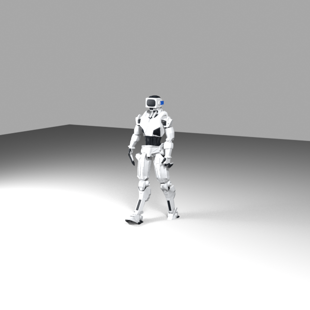

Junior AI Technologist
Builds and supports AI pipelines, automation and infrastructure inside a mobile-games studio.

Move your cursorThe butterfly follows it
Builds and supports AI pipelines, automation and infrastructure inside a mobile-games studio.
Designed a C#, SQL and Python pipeline for longitudinal medical analytics — 60% faster queries, 1B+ rows for 20+ researchers.
Taught Python and core AI to 40+ students; built an AI pipeline for automated, personalised homework feedback.
Built workflow automations and AI tooling for small teams — a mock entry; replace with the client's real interim work before launch.
Open-ended work at the seam of AI, games and visual craft — a mock entry standing in for whatever comes next before launch.
Select a skill to explore
The short version
I work across the seam between rigorous engineering and visual thinking. That means reliable pipelines, useful automations and interfaces that leave enough room for curiosity.
Selected work
Data and automation projects, presented with enough context to show how they work.

Spatial feature engineering and explainability for semiconductor map patterns.
Read the case study ↗
RAG and n8n experiments that turn scattered knowledge into usable operations.
Open the thread ↗
A workflow that helps people move from a role description to a sharper application.
See the workflow ↗What I bring
LLMs, RAG, embeddings, agents and evaluation-minded workflows.
Python, SQL, Spark, APIs and infrastructure that hold up under use.
JavaScript, React, three.js and visual experiments with a pulse.
Education
04 / next signal